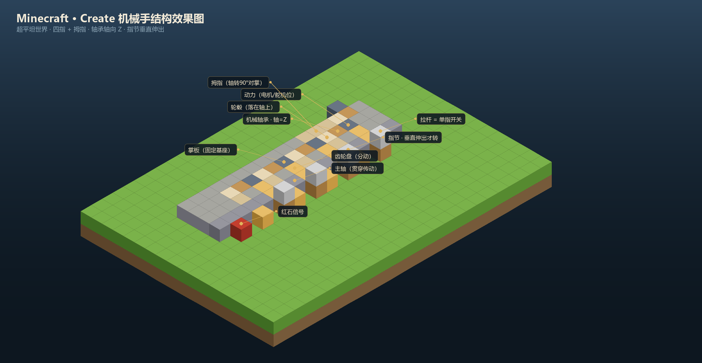

视觉采集 · 3D 复现 · 机械手
以 Create 模组的轴承与绳索滑轮模拟关节与腱绳，用齿轮变速与序列换挡控制弯曲角度， 在方块世界里先跑通「指令 → 动作」的完整流程，再映射到真实舵机与腱绳手。
SCOPE
TOP VIEW · 1 格 = 1 米
FINGER MECHANISM · 对应真实腱绳手

| 档位 | 每指机构 | 自由度 | 用料量级 | 建议 |
|---|---|---|---|---|
| 简化版 | 1 个机械轴承（指根）+ 1 个绳索滑轮 | 5 DoF | 轴承 ×5、滑轮 ×5 | 先做这个：一天可搭完，逻辑完整 |
| 完整版 | 每节 1 轴承（近/中/远），三层嵌套 | 15 DoF | 轴承 ×15、换挡 ×15 | 轴承嵌套易卡，仅追求视觉震撼时做 |
CONTROL ARCHITECTURE
S,指,角POSE SEQUENCE
| 姿态 | 动作顺序 | 延时 | 对应实物 |
|---|---|---|---|
| 张开 | 全部换挡反向脉冲 ×1，回位 | 0 tick | 弹簧回位至初始角 |
| 握拳 | 中指 → 无名指 → 食指 → 小指 → 拇指 | 每指间隔 4 tick | 依次收拢，防打架 |
| 捏取 | 拇指 + 食指同时脉冲 ×2，其余不动 | 同步 | 两指对捏轻物 |
| 指向 | 仅食指伸直，其余收拢 | 先收后指，间隔 6 tick | 指示动作 |
| 对掌 | 小指 + 拇指相向，形成环 | 同步 | 拇指对掌测试 |
| 急停 | 主离合断开 | 立即 | 断电保位 |
BUILD ORDER